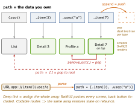

swiftui · folio
In one line: Since iOS 16 navigation is data: a NavigationStack renders a path (an
array of Hashable values) that you own; navigationDestination(for:) maps each value
type to a screen. Push = append, pop = remove, deep link = assign a whole path.
Download PDF Print view LaTeX source
How it works
NavigationStack(path: root:) (16) — the path is [Route] (one type) or NavigationPath: a type-erased list of Hashable values, so one stack can hold Item, User, Int…, each routed by its own destination.NavigationLink(_:value:) pushes a value, not a view — lazy, decoupled, programmatic. NavigationLink { Dest() } label: {} (view-based) still works but cannot be driven from the path..navigationDestination(for: T.self) { v in … } — one per type per stack, inside the stack, on a view that is always there (not in a lazy row). iOS 17 adds navigationDestination(item:); (isPresented:) is 16.- Programmatic: push
path.append(x); pop path.removeLast(); pop-to-root path = [] / path.removeAll() for an array, or path.removeLast(path.count) / path = NavigationPath() — NavigationPath has no removeAll.
- Restoration: if every element is
Codable, path.codable gives a NavigationPath.CodableRepresentation (else nil); encode to @SceneStorage / disk, rebuild with NavigationPath(rep).
NavigationSplitView (16) — 2 columns (sidebar, detail) or 3 (+content); selection drives the next column; columnVisibility binding; on compact width it collapses into a stack (preferredCompactColumn, 17).- Modals:
.sheet (card, swipe-dismiss, .presentationDetents([.medium,
.large]) 16); .fullScreenCover (no swipe-dismiss); .popover (bubble on iPad/Mac, a sheet on compact unless .presentationCompactAdaptation, 16.4). Each takes isPresented: (Bool) or item: (Identifiable? — preferred when content depends on data). Block swipe: .interactiveDismissDisabled().
@Environment(\.dismiss) (15) — pops the pushed view or closes the sheet/cover that presented this view: the nearest context.- Tabs: one
NavigationStack per tab, each with its own path.
- Router: an
@Observable object owning path (+ sheet state), put in the environment, so any view calls router.show(.x) and .onOpenURL maps a URL to routes.
Example — router + deep link
enum Route: Hashable, Codable { case item(Int), user(String) }
@Observable final class Router {
var path: [Route] = []
func open(_ url: URL) { path = Route.parse(url) }
}
struct Root: View {
@State private var router = Router()
var body: some View {
NavigationStack(path: $router.path) {
List(1..<50, id: \.self) { n in
NavigationLink("Item \(n)", value: Route.item(n)) }
.navigationDestination(for: Route.self) { Screen(route: $0) }
}
.environment(router).onOpenURL { router.open($0) }
} }
The stack is the path

Traps
NavigationLink(isActive:) / (tag:selection:) are deprecated (iOS 16), and so is NavigationView: one Bool per link, buggy pops, no restoration.navigationDestination inside a List/LazyVStack row, or two for one type — “no matching destination” or the wrong screen. Declare once, on a stable ancestor..sheet(isPresented:) + separate @State var selected — can present stale/nil data. Use .sheet(item: $selected).dismiss() inside a NavigationStack within a sheet pops the inner stack, it does not close the sheet — pass a closure/binding or read dismiss at sheet level..navigationTitle goes on the content, not on NavigationStack; a split view tested only on iPad shows a blank detail when collapsed on iPhone.- Nesting a
NavigationStack in a pushed screen = two bars / broken back stack.
Remember
“Push values, not views.” Path = [Hashable]; destination = per type; item: beats isPresented:; dismiss = nearest context.
Related: ios-swift/navigation-presentation (UIKit, sheet detents) ·
swiftui-app-scenes-lifecycle (@SceneStorage) · ios-platform/deep-links-universal-links